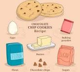

Link to order my world's best cookies
My Cookie Page.
Learn to make the best cookies!

This is John Bower's cookie page.
Come here to learn to bake the best chocolate chip cookies,
or order a batch online here. Link to order my world's best cookies
John's Best Cookie Recpie:
- 1 1/2 sticks butter - not too soft
- 1/4 cup sugar
- 2/3 cup light or golden brown sugar
- 1 egg
- 1/2 tsp baking soda
- 1/4 tsp vanilla
- 2 cups all purpose flour
- 12 oz chocolate chips
- Combine sugars and cream together with butter
- Mix in baking soda, vanilla and egg
- Add in flour 1/2 cup at a time
- Stir in chocolate chips
- Bake 375F for 12 minutes
Visit this site again to get the following recpies
| John's favs |
Ryan's fancy |
Lucy's favs |
| Sugar cookie |
Oatmeal coookie |
peanut butter cookie |
| Mac Nut chip |
Snickerdoodles |
Shortbread |
| Butter Cookies |
Gingerbread |
Black and White |
| Drop Cookies |
Biscotti |
Ube Crinkles |
| Easy recpies |
Extra Fancy Cookies |
New and exciting recipes |